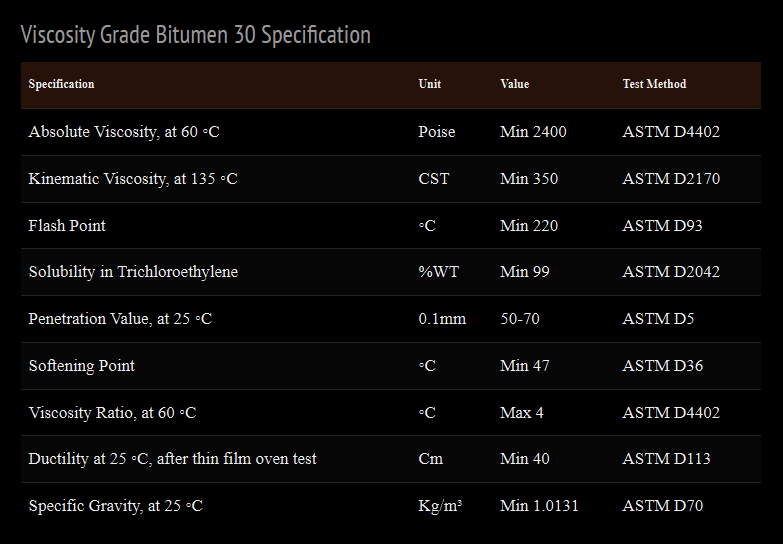

What Is Viscosity Grade Bitumen VG‑30? – Iran Bitumen Supply │ IBITMCO
Viscosity Grade Bitumen VG‑30 is one of the most widely used paving‑grade bitumens for moderate to hot climates and for road projects that must withstand heavy traffic loads. It is the modern equivalent of the older 60/70 penetration grade, offering far more reliable performance because viscosity grading reflects real‑world behavior under varying temperatures and traffic conditions. VG‑30 is commonly used in regions where average temperatures range from 30°C to 37°C, making it ideal for high‑altitude areas, warm climates, and locations where pavements must resist deformation. The standard penetration value of VG‑30 is approximately 60 dmm at 25°C, while its absolute viscosity ranges from 1600 to 2400 poise at 60°C. These characteristics give VG‑30 the strength and stiffness needed for extra‑heavy bituminous pavements, ensuring long‑term durability even under intense axle loads. Because of its balanced viscosity and excellent bonding capability, VG‑30 has become the most commonly used viscosity‑grade bitumen in road construction, building insulation, industrial applications, and the production of cutback bitumen.
Applications of Viscosity Grade Bitumen VG‑30
Bitumen VG‑30 is primarily used as a binder in asphalt mixes for road construction. Its ability to create a strong, flexible, and durable bond between aggregates makes it suitable for highways, expressways, airport runways, and other pavements exposed to significant traffic stress. It is also widely used in the production of asphalt concrete for parking areas, sidewalks, and industrial flooring. Beyond paving, VG‑30 is an essential material in the roofing industry, where it is used to manufacture asphalt shingles, roofing felt, and waterproofing membranes. Its resistance to water damage makes it suitable for underground waterproofing systems, dams, bridge decks, and other structures requiring long‑lasting moisture protection. In industrial applications, VG‑30 is used for pipe coating, providing corrosion resistance and extending the lifespan of pipelines in harsh environments.
Properties of Viscosity Grade Bitumen VG‑30
VG‑30 is defined by its viscosity at 60°C, which typically falls between 1600 and 2200 cP, indicating strong resistance to flow at elevated temperatures. Its penetration value at 25°C usually ranges from 80 to 100 dmm, reflecting a hardness level suitable for warm climates. The softening point generally lies between 40°C and 50°C, ensuring stability under hot weather conditions. The ductility of VG‑30 is typically around 100 cm at 25°C, demonstrating its ability to stretch without cracking. Its flash point is approximately 250°C or higher, ensuring safe handling during heating. VG‑30 is highly soluble in standard solvents, confirming its purity and suitability for industrial applications. It is also designed to be compatible with a wide range of aggregates commonly used in asphalt mixtures, making it a reliable choice for hot mix asphalt (HMA) production.
Packing Options for Bitumen VG‑30
At Iran Bitumen Supply │ IBITMCO, Bitumen VG‑30 is available in multiple packaging formats to meet diverse project requirements. It is commonly supplied in 180‑kg new steel drums, with approximately 110 drums loaded into a 20‑foot container. For larger quantities, VG‑30 can be shipped in 375‑kg Bitubags, allowing up to 24 metric tons per container. Bulk shipments are also available via bitumen carriers ranging from 2,000 to 20,000 metric tons. Additional options include flexi bags with a capacity of 20 metric tons and tanker trucks capable of transporting 25 metric tons.

Specification of Bitumen VG‑30